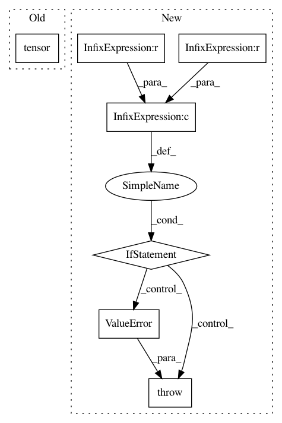

a828315185a9dc8b21ec8e5dbead9044caf0d3a2,kornia/geometry/transform/imgwarp.py,,get_rotation_matrix2d,#Any#Any#Any#,277
Before Change
// create output tensor
batch_size: int = center.shape[0]
one = torch.tensor(1.).to(center.device)
M: torch.Tensor = torch.zeros(
batch_size, 2, 3, device=center.device, dtype=center.dtype)
M[..., 0:2, 0:2] = scaled_rotation
After Change
if not (center.shape[0] == angle.shape[0] == scale.shape[0]):
raise ValueError("Inputs must have same batch size dimension. Got center {}, angle {} and scale {}"
.format(center.shape, angle.shape, scale.shape))
if not (center.device == angle.device == scale.device) or not (center.dtype == angle.dtype == scale.dtype):
raise ValueError("Inputs must have same device Got center ({}, {}), angle ({}, {}) and scale ({}, {})"
.format(center.device, center.dtype, angle.device, angle.dtype, scale.device, scale.dtype))
// convert angle and apply scale
rotation_matrix: torch.Tensor = angle_to_rotation_matrix(angle)
scaling_matrix: torch.Tensor = torch.zeros(
(2, 2), device=rotation_matrix.device, dtype=rotation_matrix.dtype).fill_diagonal_(1).repeat(
rotation_matrix.size(0), 1, 1)
scaling_matrix = scaling_matrix * scale.unsqueeze(dim=2).repeat(1, 1, 2)
scaled_rotation: torch.Tensor = rotation_matrix @ scaling_matrix
alpha: torch.Tensor = scaled_rotation[:, 0, 0]
beta: torch.Tensor = scaled_rotation[:, 0, 1]
// unpack the center to x, y coordinates
x: torch.Tensor = center[..., 0]
y: torch.Tensor = center[..., 1]
// create output tensor
batch_size: int = center.shape[0]
one = torch.tensor(1., device=center.device, dtype=center.dtype)
M: torch.Tensor = torch.zeros(
batch_size, 2, 3, device=center.device, dtype=center.dtype)
M[..., 0:2, 0:2] = scaled_rotation
M[..., 0, 2] = (one - alpha) * x - beta * y
M[..., 1, 2] = beta * x + (one - alpha) * y
return M
def remap(tensor: torch.Tensor, map_x: torch.Tensor,
map_y: torch.Tensor,
align_corners: bool = False) -> torch.Tensor:
rApplies a generic geometrical transformation to a tensor.
The function remap transforms the source tensor using the specified map:
.. math::
\text{dst}(x, y) = \text{src}(map_x(x, y), map_y(x, y))
Args:
tensor (torch.Tensor): the tensor to remap with shape (B, D, H, W).
Where D is the number of channels.
map_x (torch.Tensor): the flow in the x-direction in pixel coordinates.
The tensor must be in the shape of (B, H, W).
map_y (torch.Tensor): the flow in the y-direction in pixel coordinates.
The tensor must be in the shape of (B, H, W).
align_corners(bool): interpolation flag. Default: False. See
https://pytorch.org/docs/stable/nn.functional.html//torch.nn.functional.interpolate for detail
Returns:
torch.Tensor: the warped tensor.
Example:
>>> from kornia.utils import create_meshgrid
>>> grid = create_meshgrid(2, 2, False) // 1x2x2x2
>>> grid += 1 // apply offset in both directions
>>> input = torch.ones(1, 1, 2, 2)
>>> remap(input, grid[..., 0], grid[..., 1], align_corners=True) // 1x1x2x2
tensor([[[[1., 0.],
[0., 0.]]]])
if not isinstance(tensor, torch.Tensor):
raise TypeError("Input tensor type is not a torch.Tensor. Got {}"
.format(type(tensor)))
if not isinstance(map_x, torch.Tensor):
raise TypeError("Input map_x type is not a torch.Tensor. Got {}"
.format(type(map_x)))
if not isinstance(map_y, torch.Tensor):
raise TypeError("Input map_y type is not a torch.Tensor. Got {}"
.format(type(map_y)))
if not tensor.shape[-2:] == map_x.shape[-2:] == map_y.shape[-2:]:
raise ValueError("Inputs last two dimensions must match.")
batch_size, _, height, width = tensor.shape
// grid_sample need the grid between -1/1
map_xy: torch.Tensor = torch.stack([map_x, map_y], dim=-1)
map_xy_norm: torch.Tensor = normalize_pixel_coordinates(
map_xy, height, width)
// simulate broadcasting since grid_sample does not support it
map_xy_norm = map_xy_norm.expand(batch_size, -1, -1, -1)
// warp ans return
tensor_warped: torch.Tensor = F.grid_sample(tensor, map_xy_norm, align_corners=align_corners) // type: ignore
return tensor_warped
def invert_affine_transform(matrix: torch.Tensor) -> torch.Tensor:
rInverts an affine transformation.
The function computes an inverse affine transformation represented by
2×3 matrix:
.. math::
\begin{bmatrix}
a_{11} & a_{12} & b_{1} \\
a_{21} & a_{22} & b_{2} \\
\end{bmatrix}
The result is also a 2×3 matrix of the same type as M.
Args:
matrix (torch.Tensor): original affine transform. The tensor must be
in the shape of (B, 2, 3).
Return:
torch.Tensor: the reverse affine transform.
if not isinstance(matrix, torch.Tensor):
raise TypeError("Input matrix type is not a torch.Tensor. Got {}"
.format(type(matrix)))
if not (len(matrix.shape) == 3 and matrix.shape[-2:] == (2, 3)):
raise ValueError("Input matrix must be a Bx2x3 tensor. Got {}"
.format(matrix.shape))
matrix_tmp: torch.Tensor = convert_affinematrix_to_homography(matrix)
matrix_inv: torch.Tensor = torch.inverse(matrix_tmp)
return matrix_inv[..., :2, :3]
def get_affine_matrix2d(translations: torch.Tensor, center: torch.Tensor, scale: torch.Tensor, angle: torch.Tensor,
sx: Optional[torch.Tensor] = None, sy: Optional[torch.Tensor] = None) -> torch.Tensor:
rComposes affine matrix from the components.
Args:
translations (torch.Tensor): tensor containing the translation vector with shape :math:`(B, 2)`.
center (torch.Tensor): tensor containing the center vector with shape :math:`(B, 2)`.
scale (torch.Tensor): tensor containing the scale factor with shape :math:`(B, 2)`.
sx (torch.Tensor, optional): tensor containing the shear factor in the x-direction with shape :math:`(B)`.
sy (torch.Tensor, optional): tensor containing the shear factor in the y-direction with shape :math:`(B)`.
Returns:
torch.Tensor: the affine transformation matrix :math:`(B, 2, 3)`.
transform: torch.Tensor = get_rotation_matrix2d(center, -angle, scale)
transform[..., 2] += translations // tx/ty
// pad transform to get Bx3x3
transform_h = convert_affinematrix_to_homography(transform)
if any([s is not None for s in [sx, sy]]):
shear_mat = get_shear_matrix2d(center, sx, sy)
transform_h = transform_h @ shear_mat
return transform_h
def get_shear_matrix2d(center: torch.Tensor, sx: Optional[torch.Tensor] = None, sy: Optional[torch.Tensor] = None):
rComposes shear matrix Bx4x4 from the components.
Note: Ordered shearing, shear x-axis then y-axis.
.. math::
\begin{bmatrix}
1 & b \\
a & ab + 1 \\
\end{bmatrix}
Args:
center (torch.Tensor): shearing center coordinates of (x, y).
sx (torch.Tensor, optional): shearing degree along x axis.
sy (torch.Tensor, optional): shearing degree along y axis.
Returns:
torch.Tensor: params to be passed to the affine transformation.
Examples:
>>> rng = torch.manual_seed(0)
>>> sx = torch.randn(1)
>>> sx
tensor([1.5410])
>>> center = torch.tensor([[0., 0.]]) // Bx2
>>> get_shear_matrix2d(center, sx=sx)
tensor([[[ 1.0000, -33.5468, 0.0000],
[ -0.0000, 1.0000, 0.0000],
[ 0.0000, 0.0000, 1.0000]]])
sx = torch.tensor([0.]).repeat(center.size(0)) if sx is None else sx
sy = torch.tensor([0.]).repeat(center.size(0)) if sy is None else sy
x, y = torch.split(center, 1, dim=-1)
x, y = x.view(-1), y.view(-1)
sx_tan = torch.tan(sx) // type: ignore
sy_tan = torch.tan(sy) // type: ignore
ones = torch.ones_like(sx) // type: ignore
shear_mat = torch.stack([
ones, -sx_tan, sx_tan * y, // type: ignore // noqa: E241
-sy_tan, ones + sx_tan * sy_tan, sy_tan * (sx_tan * y + x) // noqa: E241
], dim=-1).view(-1, 2, 3)
shear_mat = convert_affinematrix_to_homography(shear_mat)
return shear_mat
def get_affine_matrix3d(translations: torch.Tensor, center: torch.Tensor, scale: torch.Tensor, angles: torch.Tensor,
sxy: Optional[torch.Tensor] = None, sxz: Optional[torch.Tensor] = None,
syx: Optional[torch.Tensor] = None, syz: Optional[torch.Tensor] = None,
szx: Optional[torch.Tensor] = None, szy: Optional[torch.Tensor] = None) -> torch.Tensor:
rComposes 3d affine matrix from the components.
Args:
translations (torch.Tensor): tensor containing the translation vector (dx,dy,dz) with shape :math:`(B, 3)`.
center (torch.Tensor): tensor containing the center vector (x,y,z) with shape :math:`(B, 3)`.
scale (torch.Tensor): tensor containing the scale factor with shape :math:`(B)`.
sxy (torch.Tensor, optional): tensor containing the shear factor in the xy-direction with shape :math:`(B)`.
sxz (torch.Tensor, optional): tensor containing the shear factor in the xz-direction with shape :math:`(B)`.
syx (torch.Tensor, optional): tensor containing the shear factor in the yx-direction with shape :math:`(B)`.
syz (torch.Tensor, optional): tensor containing the shear factor in the yz-direction with shape :math:`(B)`.
szx (torch.Tensor, optional): tensor containing the shear factor in the zx-direction with shape :math:`(B)`.
szy (torch.Tensor, optional): tensor containing the shear factor in the zy-direction with shape :math:`(B)`.
Returns:
torch.Tensor: the 3d affine transformation matrix :math:`(B, 4, 4)`.
transform: torch.Tensor = get_projective_transform(center, -angles, scale)
transform[..., 3] += translations // tx/ty/tz
// pad transform to get Bx3x3
transform_h = convert_affinematrix_to_homography3d(transform)
if any([s is not None for s in [sxy, sxz, syx, syz, szx, szy]]):
shear_mat = get_shear_matrix3d(center, sxy, sxz, syx, syz, szx, szy)
transform_h = transform_h @ shear_mat
return transform_h
def get_shear_matrix3d(
center: torch.Tensor,
sxy: Optional[torch.Tensor] = None, sxz: Optional[torch.Tensor] = None,
syx: Optional[torch.Tensor] = None, syz: Optional[torch.Tensor] = None,
szx: Optional[torch.Tensor] = None, szy: Optional[torch.Tensor] = None,
):
rComposes shear matrix Bx4x4 from the components.
Note: Ordered shearing, shear x-axis then y-axis then z-axis.
.. math::
\begin{bmatrix}
1 & o & r & oy + rz \\
m & p & s & mx + py + sz -y \\
n & q & t & nx + qy + tz -z \\
0 & 0 & 0 & 1 \\
\end{bmatrix}
Where:
m = S_{xy}
n = S_{xz}
o = S_{yx}
p = S_{xy}S_{yx} + 1
q = S_{xz}S_{yx} + S_{yz}
r = S_{zx} + S_{yx}S_{zy}
s = S_{xy}S_{zx} + (S_{xy}S_{yx} + 1)S_{zy}
t = S_{xz}S_{zx} + (S_{xz}S_{yx} + S_{yz})S_{zy} + 1
Params:
center (torch.Tensor): shearing center coordinates of (x, y, z).
sxy (torch.Tensor, optional): shearing degree along x axis, towards y plane.
sxz (torch.Tensor, optional): shearing degree along x axis, towards z plane.
syx (torch.Tensor, optional): shearing degree along y axis, towards x plane.
syz (torch.Tensor, optional): shearing degree along y axis, towards z plane.
szx (torch.Tensor, optional): shearing degree along z axis, towards x plane.
szy (torch.Tensor, optional): shearing degree along z axis, towards y plane.
Returns:
torch.Tensor: params to be passed to the affine transformation.
Examples:
>>> rng = torch.manual_seed(0)
>>> sxy, sxz, syx, syz = torch.randn(4, 1)
>>> sxy, sxz, syx, syz
(tensor([1.5410]), tensor([-0.2934]), tensor([-2.1788]), tensor([0.5684]))
>>> center = torch.tensor([[0., 0., 0.]]) // Bx3
>>> get_shear_matrix3d(center, sxy=sxy, sxz=sxz, syx=syx, syz=syz)
tensor([[[ 1.0000, -1.4369, 0.0000, 0.0000],
[-33.5468, 49.2039, 0.0000, 0.0000],
[ 0.3022, -1.0729, 1.0000, 0.0000],
[ 0.0000, 0.0000, 0.0000, 1.0000]]])
sxy = torch.tensor([0.]).repeat(center.size(0)) if sxy is None else sxy
sxz = torch.tensor([0.]).repeat(center.size(0)) if sxz is None else sxz
syx = torch.tensor([0.]).repeat(center.size(0)) if syx is None else syx
syz = torch.tensor([0.]).repeat(center.size(0)) if syz is None else syz
szx = torch.tensor([0.]).repeat(center.size(0)) if szx is None else szx
szy = torch.tensor([0.]).repeat(center.size(0)) if szy is None else szy
x, y, z = torch.split(center, 1, dim=-1)
x, y, z = x.view(-1), y.view(-1), z.view(-1)
// Prepare parameters
sxy_tan = torch.tan(sxy) // type: ignore
sxz_tan = torch.tan(sxz) // type: ignore
syx_tan = torch.tan(syx) // type: ignore
syz_tan = torch.tan(syz) // type: ignore
szx_tan = torch.tan(szx) // type: ignore
In pattern: SUPERPATTERN
Frequency: 3
Non-data size: 7
Instances
Project Name: arraiy/torchgeometry
Commit Name: a828315185a9dc8b21ec8e5dbead9044caf0d3a2
Time: 2020-12-22
Author: sj8716643@126.com
File Name: kornia/geometry/transform/imgwarp.py
Class Name:
Method Name: get_rotation_matrix2d
Project Name: arraiy/torchgeometry
Commit Name: 6ee3f1b0d2a6ebadc9e2f664354594342ab0805d
Time: 2020-11-21
Author: justanhduc@users.noreply.github.com
File Name: kornia/augmentation/augmentation.py
Class Name: RandomSolarize
Method Name: __init__
Project Name: IBM/adversarial-robustness-toolbox
Commit Name: c17c92d84ec9216b781ecfbc25c6df225e2fd4f1
Time: 2020-11-11
Author: M.N.Tran@ibm.com
File Name: art/defences/preprocessor/audio_filter_pytorch.py
Class Name: AudioFilterPyTorch
Method Name: __call__